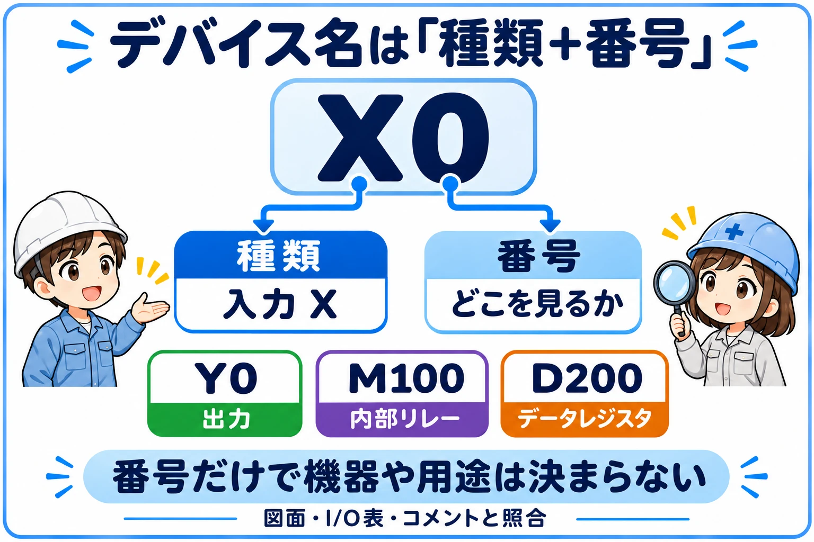
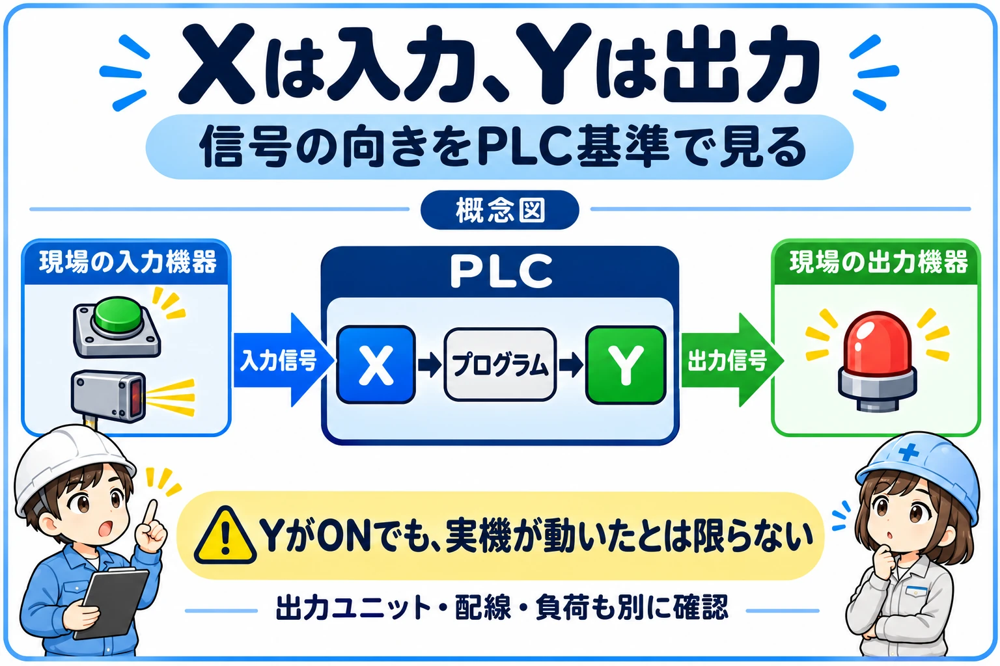
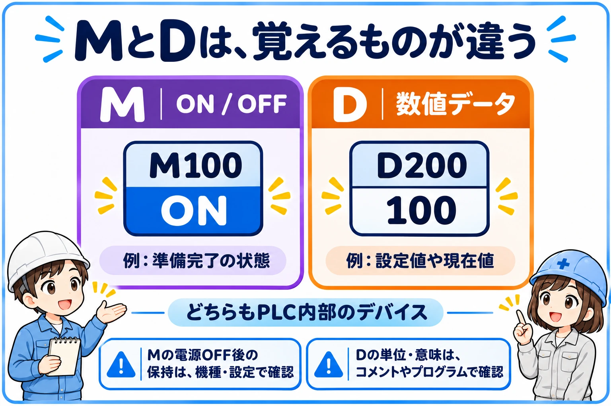
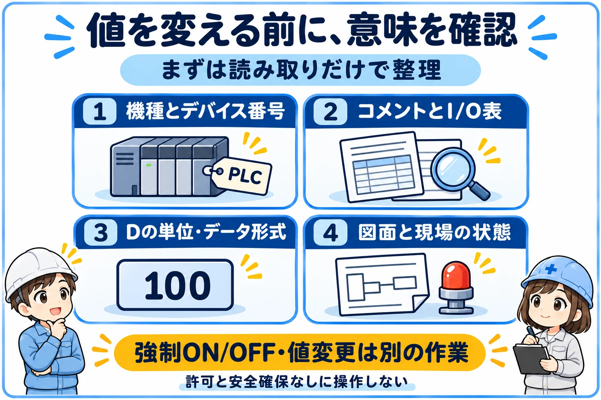

1. 先に結論：X・Y・M・Dは役割で分ける
Xは入力、Yは出力、Mは内部のON/OFF状態、Dは数値データ。まずこの違いを押さえると、ラダーやモニタ画面を読みやすくなります。
この記事は、三菱電機のMELSECで使われる表記を例にした基礎解説です。すべてのPLCメーカーで同じ名前・番号体系ではありません。実機の仕様は対象CPUのマニュアルとプロジェクト設定を優先してください。
最終内容更新：
番号は「場所」、ON/OFFや数値は「中身」
たとえばD100はデータを置く場所の名前です。「D100だから値も100」という意味ではありません。
2. X・Y・M・Dの違いを比較する
デバイスは、プログラムから信号やデータを参照するための場所です。アルファベットで種類を、後ろの番号で場所を区別します。
| 種類 | 扱うもの | イメージ |
|---|---|---|
| X：入力 | 外部から取り込むON/OFF信号 | ボタンやセンサーの状態を読む入口 |
| Y：出力 | 外部へ出すON/OFF信号 | ランプや電磁弁などへの指令の出口 |
| M：内部リレー | PLC内部のON/OFF状態 | 「準備完了」などの条件を表すメモ |
| D：データレジスタ | 設定値・現在値・演算結果など | 数値データを入れる箱 |

Mは物理的なリレー部品ではなく、Dも端子番号ではありません。X・Yも、機器との対応はI/O割付や図面で確認します。
3. XとYは、現場機器との入口・出口
ボタンやセンサーの信号を入力回路が取り込み、その状態をプログラムがXとして参照します。プログラムで判定した結果は、Yや出力回路を通じて外部機器への指令になります。

YがONでも、実機が動いたとは限らない
モニタ上の出力状態と、外部機器の動作は分けて確認します。出力方式、外部電源、配線、機器側の条件なども関係するため、Y表示だけで動作やプログラムの正しさを断定しません。
端子やCOMの基礎はPLC入出力ユニット、機器と番号の対応はI/O割付の記事で整理できます。
4. Mは内部のON/OFF、Dは数値データ
Mは、複数の条件をまとめたり、処理中の状態を表したりする内部リレーです。たとえば「準備がそろった」をMのONで表せば、その後の判定から参照できます。Mの番号自体に「準備完了」という意味があるのではなく、意味はプログラムとコメントで決まります。
内部のメモでも、電源を切った後まで残るとは限らない
運転中に状態を保持する仕組みと、電源断後のデータ保持は別です。MやDが電源再投入後に残るかは、CPU、デバイス領域、ラッチ設定、保持条件によって異なります。「Mだから残る」「Dだから消えない」と覚えないでください。
Dは「どの箱か」と「何の値か」を分けて読む
D100に「250」と表示されていても、それだけで250℃や250回とは決まりません。コメント、単位、倍率、使用している命令やデータ型を合わせて読みます。
データレジスタには16ビット単位で扱い、連続した2点を32ビットとして使う構成があります。たとえばFX3Sの公式仕様にもこの区別があります。実機では対象CPUと命令の仕様を確認し、隣のDを別の値と決めつけないことが大切です。


後輩D100の100は、入っている数字ではなく箱の番号なんですね。

先輩そう。中身の数字は、コメントや単位とセットで読もう。
値の表示形式や確認画面はGX Works3でデバイス値を見る方法にまとめています。
5. ラダーは、番号より先に役割を読む
ラダーを読む時は「どの入力を見ているか」「内部でどんな条件を作るか」「何を出力するか」を分けます。XとMは条件のON/OFF、Dは数値の比較や演算、Yは出力結果を見る手がかりになります。これは役割の整理で、各デバイスが必ず一つの位置にしか現れないという意味ではありません。
条件を読む
Xの入力状態、Mの内部条件、Dの比較などをコメントと照合します。
結果を読む
Yへの出力、Mの状態、Dへの格納など、何が変わる処理なのか確認します。
読み込みから出力反映までの順序はPLCのスキャンで確認してください。
番号の進み方と、数値の表示形式は別
たとえばFX5UJのX・Yは8進数の番号で表され、X7の次はX10です。一方、M・Dの番号は10進数です。表記はシリーズで異なるため、他機種へそのまま当てはめません。これはアドレスの規則であり、Dの中の値を10進数や16進数で表示する話とは別です。
6. 現場では、画面と実機を分けて照合する
- 対象を確かめる：CPU型式と、接続先・プロジェクトが対象設備に合っているか確認します。
- 番号の意味を読む：コメント、I/O表、図面から何の信号かを調べます。
- 値の条件を読む：Dは単位やデータ型、Mは使用箇所や保持条件を確認します。
- 現物と照合する：安全な範囲で表示灯や機器状態を確認し、モニタ表示との違いを記録します。

この記事は読み取りの基礎。動作を変えて試さない
強制ON/OFF、現在値変更、ラッチクリア、プログラムや設定の書き込みは、設備の動作や保持データを変えるおそれがあります。本記事の例を根拠に操作せず、必要な作業は設備管理者の承認と現場の安全手順に従ってください。
7. まとめ
- XとYは、外部との入力・出力を読む手がかり。
- MはPLC内部のON/OFF状態、Dは数値データ。
- 番号は場所。値や単位、保持条件は別に確認する。
- モニタ表示と現物の動作を混同しない。
まずはこの4つの役割を押さえ、次に図面・コメント・対象CPUの仕様へつなげていきましょう。
参考にしたメーカー公式資料
公式資料確認日：2026年11月14日。以下の機種別資料を、役割や注意点の確認に使用しています。
- 三菱電機：FX5UJ-24MT/ES 仕様（デバイス表記・入出力仕様）
- 三菱電機：FX3S-10MT/DSS 仕様（16ビットデータレジスタとペア使用）
- 三菱電機FAQ：データレジスタのラッチ設定について
- 三菱電機FAQ：内部リレー（M）の一括リセットの方法（保持条件の確認に使用。操作手順は本記事では扱いません）